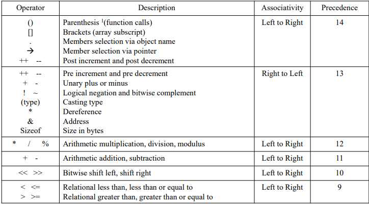
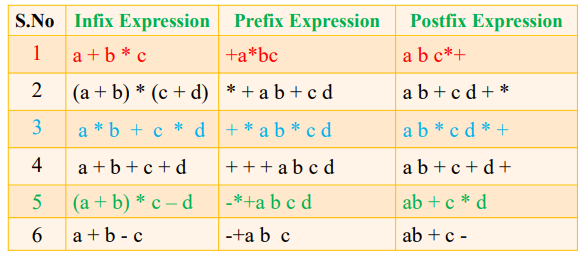

STACKS
stack
STACK: Stack is a linear data structure in which the insertion and deletion operations are performed at only one end.
TOP:
• In a stack, adding and removing of elements are performed at a single position which is known as "top”.
• That means, a new element is added at top of the stack and an element is removed from the top of the stack.
PUSH
Inserting an element into stack at top is said to be PUSH operation.
POP
Deleting element from top of the stack is said to be POP operation
Stack Operations
• Standard operations
• Push
• To insert an element at the top of stack
• Pop
• To remove element from the top of stack
• Display (user defined)
• To display the elements of stack
• Usually once it is done stack will be empty.
• Peak (user defined)
• Returns the top of the element
Applications of STACK
• Reversing a list
• Parentheses checking
• Conversion of an infix expression into a postfix expression
• Evaluation of a postfix expression
• Conversion of an infix expression into a prefix expression
• Evaluation of a prefix expression
• Recursion
• Tower of Hanoi
• DFS technique
Implementation of Stack using Arrays
the basic operations of stack are PUSH(), POP() and DISPLAY().
STACK ADT (Array Based)
// Define the stack
#define MAX 100
Element Type stack[MAX];
int top = -1;
// Define the set of operations on stack
void push(Element Type[], int, Element Type);
Element Type pop(stack, top);
void Display(Element Type [], int)
Element Type Peak(Element Type [], int);
Push operation
PROCESS:
PUSH(Element Type *stack, int top, Element Type value)
• push() is a function used to insert an element into the stack.
• The new element is always inserted at top position.
• STEP 1 - Check whether stack is FULL. (top = = SIZE-1 or not)
• STEP 2 - If stack is FULL, then display "Stack OVERFLOW!!! Insertion is not possible!!!" and terminate the function.
• STEP 3 - If stack is NOT FULL, then increment top value by one (top++) and set stack[top] to value (stack[top] = value).
ALGO:
step - 1 : IF top = Max-1
Display “ OVERFLOW”
Go to step-4
step – 2: top++
Step – 3: stack[top] = value
Step - 4: End
Time Complexity = O(1)
POP operation
POP:
• pop() is a function used to delete an element from the stack.
• In a stack, the element is always deleted from top position.
• Visiting element from the stack is possible by calling pop().
• STEP 1 - Check whether stack is EMPTY. (top = = -1)
• STEP 2 - If it is EMPTY, then display “UNDERFLOW! Deletion is not possible!" and terminate the function.
• STEP 3 - If it is NOT EMPTY, then delete stack[top] and decrement top value by one (top--).
ALGO:
step - 1 : IF top = -1
Display “ UNDERFLOW”
Go to step-5
step – 2: x = stack[top]
Step – 3: top--
Step – 4: return x
Step - 5: End
Time Complexity = O(1)
STACK PROGRAM
DONT KNOW
Implementation of STACK using Linked Lists
• The other way of implementing the stack is using the Linked List (SLL/ CSLL/ DLL/ CDLL).
• The push operation is the insertion of node into the linked list at the beginning.
• The pop operation is the deletion of node from the beginning (the header/ top node)
STACK ADT (Linked List Based (SLL))
// Define node
typedef struct Node STACK;
struct Node
{ int data; // Assume we are storing integer data
STACK *next;
}*top = NULL; // Initially stack is empty
// Define the set of operations on stack
void push(STACK *, int);
int pop(STACK *);
void Display(STACK *)
int Peak(STACK *);
Push operation
PUSH(STACK *stack, int top, Element Type value)
• push() is a function used to insert an element into the stack.
• The new element is always inserted at the beginning of the list and is pointed by top (In List it is head / start) .
PROCESS :
• STEP 1 - create a new_node. If new_node creation failed, then display "Stack OVERFLOW!!! Insertion is not possible!!!" and terminate the function.
• STEP 2 - If stack is NOT FULL, then insert the value and assign NULL to new_node-->next.
• STEP 3 – if top == NULL, then assign new_node to top and terminate the function;
• STEP 4 – If top != NULL, then assign top to new_node-->next and new_node to top;
Time Complexity = O(1)
Pop operation
• pop() is a function used to delete an element from the top of the stack.
• The element is always deleted at the beginning of the list and is pointed by top (In List it is head / start) .
PROCESS :
• STEP 1 - If top is NULL, then display "Stack UNDERFLOW!!! Deletion is not possible!!!" and terminate the function.
• STEP 2 - If stack is NOT EMPTY, then declare a pointer temp and assign top to temp.
• STEP 3 – if topnext == NULL, then assign NULL to top, delete the temp and terminate the function;
• STEP 4 – If topnext != NULL, then assign top to tempnext and delete temp;
Time Complexity = O(1)
Parenthesis checking
• {(((([]))))} // Check the parenthesis are balanced or not
• if char is ‘(‘ or ‘{‘ or ‘[‘ then we push it onto the top of stack.
• If char is ‘)’ or ‘}’ or ‘]’ then we perform pop operation and if the popped character is the matches with the starting bracket then fine otherwise parenthesis are not balanced and terminate the task.
• If char is the end of string and if stack is empty, then its is imbalanced
• In other cases, it is said to imbalanced.
Notations – infix, prefix and postfix
• Any arthematic expression consists of operators and operands.
• The way we write the arithmetic expression is called notation;
• There are three different notations used to write the athematic expression.
1. Infix Expression
2. Prefix Expression
3. Postfix expression
• We can convert the expression in one notation to another notation
Infix Notation
• An expression is said to be in infix notation if the operators in the expression are placed in between the operands on which the operator works.
• For example - a + b * c
• In the above example the operator is * is placed between the operands on which this operator works, here b and c.
• Infix expressions are easy for humans to read, write and understand, but it is not the case for computing devices.
• It is costly (in terms of space and time) to process the infix expressions in algorithm
Prefix Notation
• An expression is said to be in prefix notation if the operators in the expression are placed before the operands on which the operator works.
• For example - +a*bc
• In the above example the operator is * is placed before the operands on which this operator works, here b and c, similarly the + is placed before a and the result of (b*c).
• Prefix notation is also called as Polish notation
Postfix Notation
• An expression is said to be in prefix notation if the operators in the expression are placed before the operands on which the operator works.
• For example - +a*bc
• In the above example the operator is * is placed before the operands on which this operator works, here b and c, similarly the + is placed before a and the result of (b*c).
• Prefix notation is also called as Polish notation
Evaluation of expressions
• When evaluating the arithmetic expression two things need be considered:
1. The precedence of the operator - If any operand is present in-between two different operators, the precedence (priority) of the one operator over the other decides which operator should use the operand first or which operator to be evaluated first. For example in the arithmetic expression a + b * c the operand b is surrounded by the operators * and +. In computer languages the * enjoying the higher precedence than the +, so * takes b first.
2. The Associativity of the operator - It resolves the ties between the same precedence of operators in the arithmetic expression, by considering the whether the operators are evaluated from left to right or right to left. For example in the expression a* b * c, here b is surrounded by two * operators, So which * should take b first or which multiplication must be done first? It is decided by the associativity of *. So in computer languages * is a left associative, so the first * will be performed first (multiply and b first then the result will
be multiplied by c).
Precedence and Associativity of operators


Infix to postfix Conversion
1. Read all the symbols one by one from left to right in the given Infix Expression.
2. If the reading symbol is operand, then immediately send it to the output.
3. If the reading symbol is left parenthesis '(', then Push it on to the Stack.
4. If the reading symbol is right parenthesis ')', then Pop all the contents of stack until respective left parenthesis is popped and print each popped symbol to the output.
5. If the reading symbol is operator (+ , - , * , / etc.,), then Push it on to the Stack. However, first pop the operators which are already on the stack that have higher or equal precedence than the current operator and output them. If open parenthesis is there on top of the stack then push the operator into stack, even though the precedence of ( is more than any other operator and it is the exceptional case).
6. If the input is over, so pop all the remaining symbols from the stack and output them.
Infix to Prefix Conversion
1. Reverse the given infix expression, for example the reverse of the infix expression a + b *c is c * b + a. When reversing the parenthesis ‘)’ will become ‘(‘ and ‘(‘ will become ‘)’ (applicable to all types of brackets)
2. Apply the infix to postfix conversion algorithm on the reversed infix expression. For the above example the resultant postfix expression is: cb*a+
3. Reverse the obtained postfix expression, and is the required prefix expression for the given infix expression. for thae above example, the infix expression is +a*bc
Prefix to Infix Conversion
1. Reverse the given prefix expression, for example the reverse of the prefix expression *cd is dc*
2. Read the character by character of the reversed infix expression and repeat the step 3 and 4 till there are no characters in the reversed prefix expression .
3. If the character read is an operand then push the operand into the stack. (push d and c)
4. If the character read is an operator, op, then pop the top two symbols from the stack, the first one is p1, and the second one is p2. Push the concatenated string p1 op p2 to stack.(push c *d )
5. Now the value in the stack is the required infix expression. (c*d)
Prefix to Postfix Conversion
1. Reverse the given prefix expression, for example the reverse of the prefix expression *cd is cd*.
2. Read the character by character of the reversed infix expression and repeat the step 3 and 4 till there are no characters in the reversed prefix expression .
3. If the character read is an operand then push the operand into the stack. (push d and c)
4. If the character read is an operator, op, then pop the top two symbols from the stack, the first one is p1, and the second one is p2. Push the concatenated string p1 p2 op to stack.(push c d * )
5. Now the value in the stack is the required infix expression. (c d *)
Postfix to Infix Conversion
1. Read the character by character of the given postfix expression and repeat the step 3 and 4 till there are no characters in the postfix expression. For example assume the postfix expression ab+;
2. If the character read is an operand then push the operand into the stack. (push a and b)
3. If the character read is an operator, op, then pop the top two symbols from the stack, the first one is p1, and the second one is p2. Push the concatenated string p2 op p1 to stack.(push a * b )
4. Now the value in the stack is the required infix expression. (a * b
Postfix to Prefix Conversion
1. Read the character by character of the given postfix expression and repeat the step 2 and 3 till there are no characters in the postfix expression. For example assume the postfix expression ab+;
2. If the character read is an operand then push the operand into the stack. (push a and b)
3. If the character read is an operator, op, then pop the top two symbols from the stack, the first one is p1, and the second one is p2. Push the concatenated string op p2 p1 to stack. (push a * b )
4. Now the value in the stack is the required postfix expression. (*a b
TABLE OF CONVERSIONS

BACK TO TOP